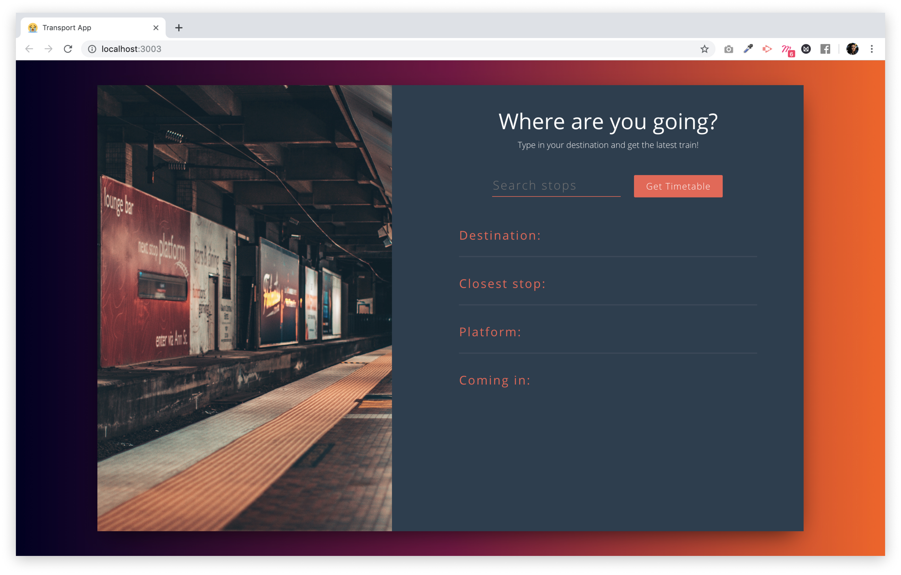

This research aims to explore the possibilities of data sonification for wayfinding in a public space. An example of data will be derived from the open data source of NSW Transport Data API which will be combined with GPS data to provide a real-time environment. Ultimately, the research aims to demonstrate the perception of soundscape as a way to improve wayfinding but can also be potentially relevant for visually impaired people.
The objective of this project is to undertake an extensive UX research and produce a first iteration of working prototype that embeds data sonification to assist in NSW public transport timetable.
In the twenty-first century, the everyday use of mobile digital technologies has influenced how people make wayfinding decisions in the urban environment. Technologies such as Google maps, geographic positioning systems (GPS), and dynamic forms of digital signage are now implicated in the decisions people make about where to go and how to get there. While these ubiquitous tools are efficient and beneficial in navigation performance, they are vision centric which reduces situation awareness. According to Centre for Road Safety — Pedestrian Trauma Trends Report 2017, pedestrian fatality rate increases in average of 15% every 5 years due to mobile phone use and these numbers are rising. Similarly for drivers, research from Nasar and Troyer (2013) confirms the higher rates of accidents when mobile phones are activated while driving. In addition to risks within utilising a visual device for wayfinding, the process does not accommodate people who are vision impaired or cannot read.
Before going in the interview, I have made a couple of assumptions.
I interviewed 12 people mainly students from class and a couple of work colleague in this process. The interview was structured in a conversational way to gain more insights into the topic and their experience. The questions were set starting off with their journey to navigating, hazards and challenges and concluded with audio related question. Most of the interviewers travel via train station and have not actually encountered accidents but are at higher risks. Examples of risks include bumping into a pole, walking into people and crossing the road at green lights. The most challenging part is orientation of the map and matching the map with outside environment. I have also found that there are many steps in navigation process and multiple touch point with the app.
After interviweing 12 users, I have gone into more details about each specific user for each mode of transport. An extensive analysis of user personas are created for users who travel via bus, train and via car. This crucial step allows me to understand their specific needs and what their daily commute is like.
To further analysis the user persona, I have picked Persona 3 to analyse the user's journey of navigating while driving in details. This is significant so that pain points are identified.
From the table below, navigation process can be divided into 3 categories: the planning phase (which normally takes a day before to plan out the trip), then the 'get ready' phase (which is the moment before the user leave the origin), and finally the navigation phase (while the user performs navigation). We see that Google Maps is a prime tool to plan out the journey and is predominantly used for searching for the destination's location, fastest route, and time. Then the device is being used again the moment before the user leave to check for real-time data such as traffic and finally, the device is used throughout the navigation process.
Main problems to take from this analysis conclude that there are multiple stages of interaction with the Google Maps where it is heavily visual. A repetition can be seen where the user had to re-type or input the destination twice during the planning phase and the 'get ready' phase. During navigation, the user is at high risk when driving. Pain points can be seen towards the end of the journey where destination can be challenging to locate due to multiple task in cognitive mapping in order to match the visual map and the real-time environment.
Problem StatementHow might we assist the navagination process in the urban environment so that commuters have an efficient and safer journey?
Matching the visual map with the real environment is challenging where the user requires cognitive mapping ability to locate landmarks, street path, edge and point of interest.
The user will constantly look at the visual map while navigating which is a hazard when travelling via car or walking on the busy urban street.
As our urban city gets more complex with multiple road layers, more data collected and constant change in infrastructure, visual maps will constant more layers with visual icons and representation to match with the real environment. This can be confusing.
After understanding the user's pain point through research, I was able to combine the results and ideate the output for my solution. I wanted my solution to reduce planning phase so that any repetition of re-typing the location can be minimised. The solution should allow the user focus less on the digital device so that the user can concentrate on the outside environment, thus lower the risks. Lastly, the device should provide a one stop solution that returns a singular response instead of multiple options. This will help the user with decision making process during the rushing and spontaneous activity.
I got my hands on front-end development and coded React.js as a first iteration for prototype. The full process can be found in the blog that I have comprehensively explain each process and solutions to all the problems I have encountered. Here is the Link to view my journey to coding this prototype.
